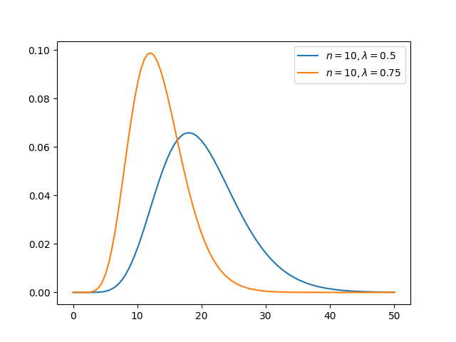
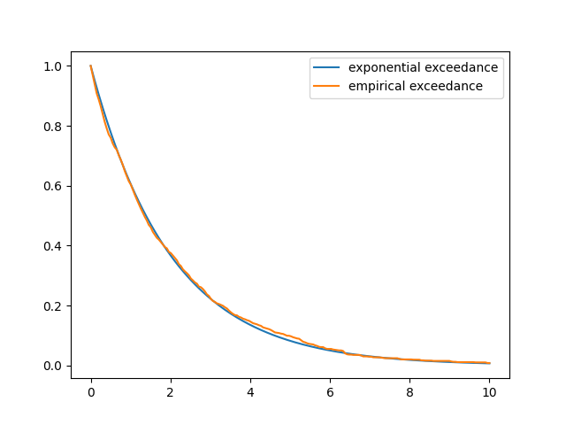
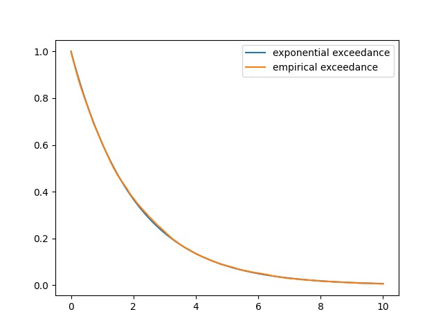

Distribusi Tanpa Ingatan
Selain pustaka yang tersedia di Anaconda, kuliah ini memerlukan pustaka berikut:
# Build luring hilir: perintah pemasangan paket dari sumber dihapus.Gambaran umum
Menurut definisi, proses Markov bersifat melupakan masa lalu.
Secara khusus, untuk setiap proses Markov, distribusi hasil di masa depan hanya bergantung pada keadaan saat ini, bukan pada seluruh riwayat.
Dalam kasus rantai Markov waktu kontinu, yang melompat di antara keadaan-keadaan diskret, hal ini mengharuskan bahwa lama waktu yang telah berlalu sejak lompatan terakhir tidak membantu memprediksi waktu lompatan berikutnya.
Dengan kata lain, waktu-waktu lompatan bersifat “tanpa ingatan”.
Menariknya, satu-satunya distribusi pada \(\RR_+\) yang memiliki sifat ini adalah distribusi eksponensial.
Demikian pula, satu-satunya distribusi tanpa ingatan pada \(\ZZ_+\) adalah distribusi geometrik.
Kuliah ini berusaha memperjelas gagasan-gagasan tersebut.
Kita akan menggunakan impor berikut:
import numpy as np
import matplotlib.pyplot as plt
import quantecon as qe
from numba import njit
from scipy.special import factorial, binomDistribusi Geometrik
Pertimbangkan taruhan pada roda rolet dan misalkan merah muncul empat kali berturut-turut.
Karena lima hasil merah berturut-turut merupakan kejadian yang jarang, banyak orang secara naluriah merasa bahwa hitam lebih mungkin muncul pada putaran kelima — “Kali ini pasti hitam!”
Namun, penalaran rasional menunjukkan bahwa naluri tersebut keliru: empat hasil merah sebelumnya tidak memengaruhi hasil putaran berikutnya.
(Banyak kasino menyediakan minuman beralkohol gratis tanpa batas untuk mencegah analisis rasional semacam ini.)
Pernyataan matematis dari fenomena ini adalah: distribusi geometrik bersifat tanpa ingatan.
Sifat tanpa ingatan
Misalkan \(X\) adalah peubah acak yang didukung pada bilangan bulat tak-negatif \(\ZZ_+\).
Kita mengatakan bahwa \(X\) berdistribusi geometrik jika, untuk suatu \(\theta\) yang memenuhi \(0 \leq \theta \leq 1\),
\[ \PP\{X = k\} = (1-\theta)^k \theta \qquad (k = 0, 1, \ldots) \]
Salah satu contoh dapat dibangun dari pembahasan tentang roda rolet di atas.
Misalkan,
- hasil setiap putaran adalah merah atau hitam,
- putaran diberi label \(0, 1, 2, \ldots\),
- pada setiap putaran, hitam muncul dengan peluang \(\theta\), dan
- hasil pada putaran-putaran yang berbeda saling independen.
Maka persamaan geodist adalah peluang bahwa kemunculan hitam pertama terjadi pada putaran \(k\).
(Hasil “hitam” gagal muncul sebanyak \(k\) kali, lalu berhasil.)
Sesuai dengan pembahasan pada pendahuluan, distribusi geometrik bersifat tanpa ingatan.
Secara khusus, untuk setiap bilangan bulat tak-negatif \(m\), kita memiliki
\[ \PP \{X = m + 1 \,|\, X > m \} = \theta \]
Dengan kata lain, berapa pun lamanya kita hanya melihat hasil merah, peluang munculnya hitam pada putaran berikutnya sama dengan peluang tak-bersyarat untuk mendapatkan hitam pada putaran pertama.
Untuk membuktikan persamaan memgeo, kita menggunakan sifat-sifat dasar distribusi geometrik dan memperoleh
\[ \frac{ \PP \{X = m + 1 \text{ and } X > m \} } {\PP \{X \geq m\}} = \frac{ \PP \{X = m + 1 \} } {\PP \{X > m\}} = \frac{ (1-\theta)^{m+1} \theta } {(1-\theta)^{m+1} } = \theta \]
Distribusi Eksponensial
Kelak, ketika kita membangun rantai Markov waktu kontinu, kita perlu menentukan distribusi waktu tinggal, yaitu interval waktu di antara lompatan.
Seperti dibahas di atas (dan akan dibahas lagi di bawah), distribusi waktu tinggal harus tanpa ingatan agar rantai memenuhi sifat Markov.
Walaupun distribusi geometrik bersifat tanpa ingatan, dukungannya yang diskret membuatnya kurang cocok untuk kasus waktu kontinu.
Karena itu kita beralih ke distribusi eksponensial, yang didukung pada \(\RR_+\).
Peubah acak \(Y\) pada \(\RR_+\) disebut eksponensial dengan laju \(\lambda\), dan ditulis \(Y \sim \Exp(\lambda)\), jika
\[ \PP\{Y > y\} = e^{-\lambda y} \qquad (y \geq 0) \]
Dari Geometrik ke Eksponensial
Distribusi eksponensial dapat dipandang sebagai “limit” distribusi geometrik.
Untuk mengilustrasikannya, misalkan
- pelanggan datang ke sebuah toko pada waktu-waktu diskret \(t_0, t_1, \ldots\)
- waktu-waktu tersebut berjarak sama, sehingga \(h = t_{i+1} - t_i\) untuk suatu \(h > 0\) dan setiap \(i \in \ZZ_+\)
- pada setiap \(t_i\), nol atau satu pelanggan datang (tidak lebih, karena \(h\) kecil)
- kedatangan pada setiap \(t_i\) terjadi dengan peluang \(\lambda h\) serta independen terhadap \(i\).
Kenyataan bahwa peluang kedatangan sebanding dengan \(h\) penting untuk pembahasan selanjutnya.
Bayangkan banyak pelanggan melewati toko, masing-masing masuk secara independen.
Jika interval waktu dibagi dua, peluang seorang pelanggan masuk juga dibagi dua.
Misalkan
- \(Y\) adalah waktu kedatangan pertama di toko,
- \(t\) adalah bilangan positif yang diberikan, dan
- \(i(h)\) adalah bilangan bulat terbesar sedemikian sehingga \(t_{i(h)} \leq t\).
Perhatikan bahwa, ketika \(h \to 0\), kisi menjadi semakin rapat dan \(t_{i(h)} = i(h) h \to t\).
Tuliskan \(i(h)\) sebagai \(i\). Dengan menggunakan distribusi geometrik, peluang bahwa kedatangan pertama terjadi setelah \(t_{i}\) adalah \((1-\lambda h)^{i}\).
Jadi
\[ \PP\{Y > t_{i} \} = (1-\lambda h)^i = \left( 1- \frac{\lambda i h}{i} \right)^i \]
Dengan menggunakan fakta bahwa \(e^x = \lim_{i \to \infty}(1 + x/i)^i\) untuk semua \(x\) dan \(i h = t_i \to t\), untuk \(i\) besar kita memperoleh
\[ \PP\{Y > t\} \approx e^{- \lambda t} \]
Dalam pengertian ini, eksponensial merupakan limit distribusi geometrik.
Sifat Tanpa Ingatan Distribusi Eksponensial
Distribusi eksponensial adalah satu-satunya distribusi yang didukung pada \(\RR_+\) dan bersifat tanpa ingatan, sebagaimana ditegaskan teorema berikut.
Karakterisasi Distribusi Eksponensial Jika \(X\) adalah peubah acak yang didukung pada \(\RR_+\), maka terdapat \(\lambda > 0\) sedemikian sehingga \(X \sim \Exp(\lambda)\) jika dan hanya jika, untuk setiap \(s, t\) positif,
Untuk melihat bahwa persamaan memexpo berlaku ketika \(X\) eksponensial dengan laju \(\lambda\), tetapkan \(s, t > 0\) dan perhatikan
\[ \frac{ \PP \{X > s + t \text{ and } X > s \} } {\PP \{X > s\}} = \frac{ \PP \{X > s + t \} } {\PP \{X > s\}} = \frac{e^{-\lambda s - \lambda t}}{e^{-\lambda s}} = e^{-\lambda t} \]
Untuk menunjukkan implikasi sebaliknya, misalkan \(X\) adalah peubah acak yang didukung pada \(\RR_+\) dan memenuhi persamaan memexpo.
Fungsi “pelampauan” \(f(s) := \PP\{X > s\}\) kemudian memiliki tiga sifat:
- \(f\) menurun pada \(\RR_+\),
- \(0 < f(t) < 1\) untuk setiap \(t > 0\),
- \(f(s + t) = f(s) f(t)\) untuk setiap \(s, t > 0\).
Sifat pertama berlaku untuk semua fungsi pelampauan, sifat kedua disebabkan oleh kenyataan bahwa \(X\) didukung pada seluruh \(\RR_+\), dan sifat ketiga adalah persamaan memexpo.
Dari ketiga sifat ini kita akan menunjukkan bahwa
\[ f(t) = f(1)^t \;\; \forall \, t \geq 0 \]
Hal ini cukup untuk membuktikan klaim karena kemudian \(\lambda := - \ln f(1)\) merupakan bilangan riil positif (menurut sifat 2), dan lebih lanjut,
\[ f(t) = \exp( \ln ( f(1) ) t) = \exp( - \lambda t) \]
Untuk melihat bahwa persamaan implex berlaku, tetapkan bilangan bulat positif \(m,n\).
Dengan menggunakan sifat 3, kita memperoleh
\[ f(m/n) = f(1/n)^m \quad \text{and} \quad f(1) = f(1/n)^n \]
Akibatnya, \(f(m/n)^n = f(1/n)^{m n} = f(1)^m\) dan, dengan mengambil pangkat \(1/n\), kita mendapatkan persamaan implex untuk \(t=m/n\).
Pembahasan sejauh ini mengonfirmasi bahwa persamaan implex berlaku ketika \(t\) rasional.
Sekarang ambil sembarang \(t \geq 0\) dan barisan rasional \((a_n)\) serta \((b_n)\) yang konvergen ke \(t\), dengan \(a_n \leq t \leq b_n\) untuk setiap \(n\).
Menurut sifat 1, \(f(b_n) \leq f(t) \leq f(a_n)\) untuk setiap \(n\), sehingga
\[ f(1)^{b_n} \leq f(t) \leq f(1)^{a_n} \quad \forall \, n \in \NN \]
Mengambil limit terhadap \(n\) menyelesaikan pembuktian.
Kegagalan Sifat Tanpa Ingatan
Kita mengetahui dari bagian sebelumnya bahwa setiap distribusi pada \(\RR_+\) selain distribusi eksponensial gagal bersifat tanpa ingatan.
Berikut contoh yang membantu memperjelas hal ini (walaupun dukungan distribusinya merupakan himpunan bagian sejati dari \(\RR_+\)).
Peubah acak \(Y\) memiliki distribusi Pareto dengan parameter positif \(t_0, \alpha\) jika
\[ f(t) := \PP\{Y > t\} = \begin{cases} 1 & \text{ if } t \leq t_0 \\ (t_0 / t)^\alpha & \text{ if } t > t_0 \end{cases} \]
Akibatnya, untuk \(s > t_0\),
\[ \PP \{Y > s + t \,|\, Y > s \} = \frac{ \PP \{Y > s + t \} } {\PP \{Y > s\}} = \left( \frac{t}{t + s} \right)^\alpha \]
Karena peluang ini menurun terhadap \(s\), distribusi tersebut tidak bersifat tanpa ingatan.
Jika kita telah menunggu berjam-jam untuk suatu kejadian (yakni, \(s\) besar), maka peluang harus menunggu satu jam lagi relatif kecil.
Jumlah Peubah Eksponensial
Peubah acak \(W\) pada \(\RR_+\) dikatakan memiliki distribusi Erlang jika densitasnya berbentuk
\[ f(t) = \frac{\lambda^n t^{n-1}}{(n-1)!} e^{-\lambda t} \qquad (t \geq 0) \]
untuk suatu \(n \in \NN\) dan \(\lambda > 0\).
Parameter \(n\) dan \(\lambda\) masing-masing disebut parameter bentuk dan laju.
Gambar berikut menunjukkan bentuk untuk dua parameterisasi.
Tampilkan kode
t_grid = np.linspace(0, 50, 100)
class Erlang:
def __init__(self, λ=0.5, n=10):
self.λ, self.n = λ, n
def __call__(self, t):
n, λ = self.n, self.λ
return (λ**n * t**(n-1) * np.exp(-λ * t)) / factorial(n-1)
e1 = Erlang(n=10, λ=0.5)
e2 = Erlang(n=10, λ=0.75)
fig, ax = plt.subplots()
for e in e1, e2:
ax.plot(t_grid, e(t_grid), label=f'$n={e.n}, \lambda={e.λ}$')
ax.legend()
plt.show()
Fungsi distribusi kumulatif (CDF) distribusi Erlang adalah
\[ F(t) = \PP\{W \leq t\} = 1 - \sum_{k=0}^{n-1} \frac{(\lambda t)^k}{k!} e^{-\lambda t} \]
Distribusi Erlang menarik bagi kita karena fakta berikut.
Distribusi Jumlah Peubah Eksponensial Jika, untuk suatu \(\lambda > 0\), barisan \((W_i)\) berdistribusi IID dan eksponensial dengan laju \(\lambda\), maka \(J_n := \sum_{i=1}^n W_i\) memiliki distribusi Erlang dengan bentuk \(n\) dan laju \(\lambda\).
Hal ini terhubung dengan teori proses Poisson, sebagaimana akan segera kita lihat.
Latihan
Karena sifat tanpa ingatannya, kita dapat “menghentikan” dan “memulai ulang” pengambilan sampel eksponensial tanpa mengubah distribusinya.
Untuk mengilustrasikannya, tetapkan \(\lambda > 0\), ambil sampel dari \(\Exp(\lambda)\), lalu hentikan dan mulai ulang setiap kali suatu ambang \(s\) terlewati.
Secara khusus, pertimbangkan peubah acak \(X\) yang didefinisikan sebagai berikut:
- Ambil \(Y\) dari \(\Exp(\lambda)\).
- Jika \(Y \leq s\), tetapkan \(X = Y\).
- Jika tidak, ambil \(Z\) secara independen dari \(\Exp(\lambda)\) dan tetapkan \(X = s + Z\).
Tunjukkan bahwa \(X \sim \Exp(\lambda)\).
Solusi Misalkan \(X\) dibangun seperti pada pernyataan latihan dan tetapkan \(t > 0\).
Jika \(t \leq s\), maka \(X > t\) jika dan hanya jika \(Y > t\), sehingga \(\PP\{X>t\}=e^{-\lambda t}\).
Jika \(t>s\), maka \(X>t\) jika dan hanya jika \(Y>s\) dan \(Z>t-s\). Dengan independensi,
\[ \PP\{X>t\} =\PP\{Y>s\}\PP\{Z>t-s\} =e^{-\lambda s}e^{-\lambda(t-s)} =e^{-\lambda t}. \]
Jadi fungsi pelampauan \(X\) sama dengan fungsi pelampauan distribusi eksponensial berlaju \(\lambda\), dan karena itu \(X \sim \Exp(\lambda)\).
Tetapkan \(\lambda = 0.5\) dan \(s=1.0\).
Simulasikan 1.000 pengambilan \(X\) menggunakan algoritme di atas.
Gambarkan fraksi sampel yang melebihi \(t\) untuk setiap \(t \geq 0\) (pada suatu kisi), lalu bandingkan dengan \(t \mapsto e^{-\lambda t}\).
Apakah kecocokannya baik? Bagaimana jika jumlah pengambilan ditambah?
Apakah hasilnya sejalan dengan hasil latihan sebelumnya?
Solusi
Berikut salah satu solusi, dimulai dengan 1.000 pengambilan.
λ = 0.5
np.random.seed(1234)
t_grid = np.linspace(0, 10, 200)
@njit
def draw_X(s=1.0, n=1_000):
np.random.seed(1234)
draws = np.empty(n)
for i in range(n):
Y = np.random.exponential(scale=1/λ)
if Y <= s:
X = Y
else:
Z = np.random.exponential(scale=1/λ)
X = s + Z
draws[i] = X
return draws
fig, ax = plt.subplots()
draws = draw_X()
empirical_exceedance = [np.mean(draws > t) for t in t_grid]
ax.plot(t_grid, np.exp(- λ * t_grid), label='exponential exceedance')
ax.plot(t_grid, empirical_exceedance, label='empirical exceedance')
ax.legend()
plt.show()
Kecocokannya sudah sangat dekat, sesuai dengan teori pada latihan pertama.
Kedua garis menjadi tak terbedakan ketika \(n\) semakin besar.
fig, ax = plt.subplots()
draws = draw_X(n=10_000)
empirical_exceedance = [np.mean(draws > t) for t in t_grid]
ax.plot(t_grid, np.exp(- λ * t_grid), label='exponential exceedance')
ax.plot(t_grid, empirical_exceedance, label='empirical exceedance')
ax.legend()
plt.show()